s01_opening
台詞と音声（3本）
今日という日を、私はずっと待っていました。
時として、すべてを変えてしまう革命的な製品が現れます。
そんな製品を、ひとつでも紹介できれば幸運です。
スクリーンの静止スライドを含めてH3で生成。字幕はRemotion。画像をクリックすると原寸、台詞欄で採用済み音声を再生できます。
今日という日を、私はずっと待っていました。
時として、すべてを変えてしまう革命的な製品が現れます。
そんな製品を、ひとつでも紹介できれば幸運です。
今日、私たちは、3つ、紹介します。
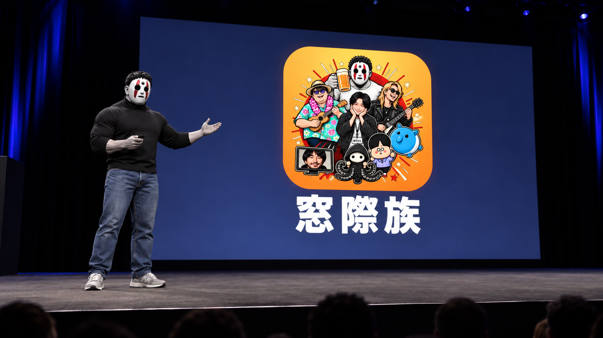
ひとつめ。窓際族。
ふたつめ。T。
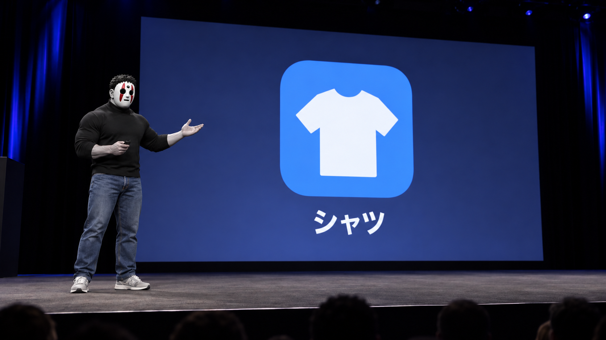
そして、みっつめ。シャツ。
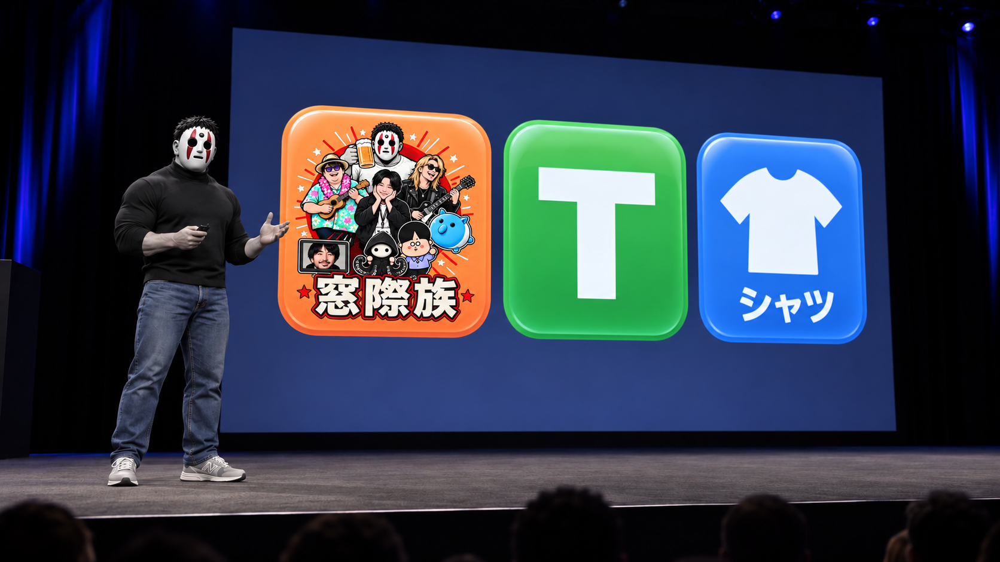
窓際族。T。シャツ。
窓際族。T。シャツ。
もう、おわかりですね？
これは、3つの別々の製品ではありません。
ひとつの製品です。
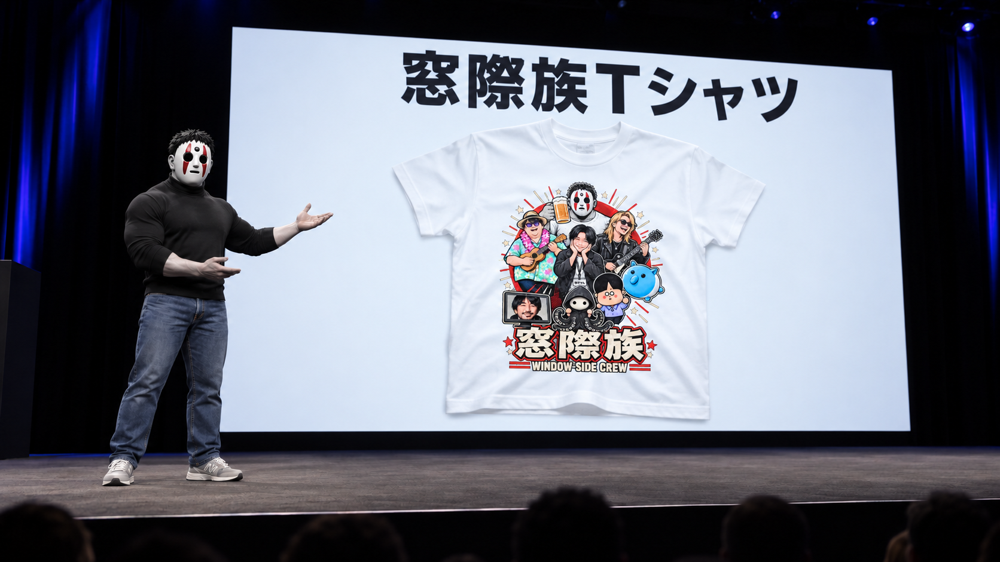
私たちは、これを、窓際族Tシャツと呼びます。
今日、私たちはTシャツを再発明します。
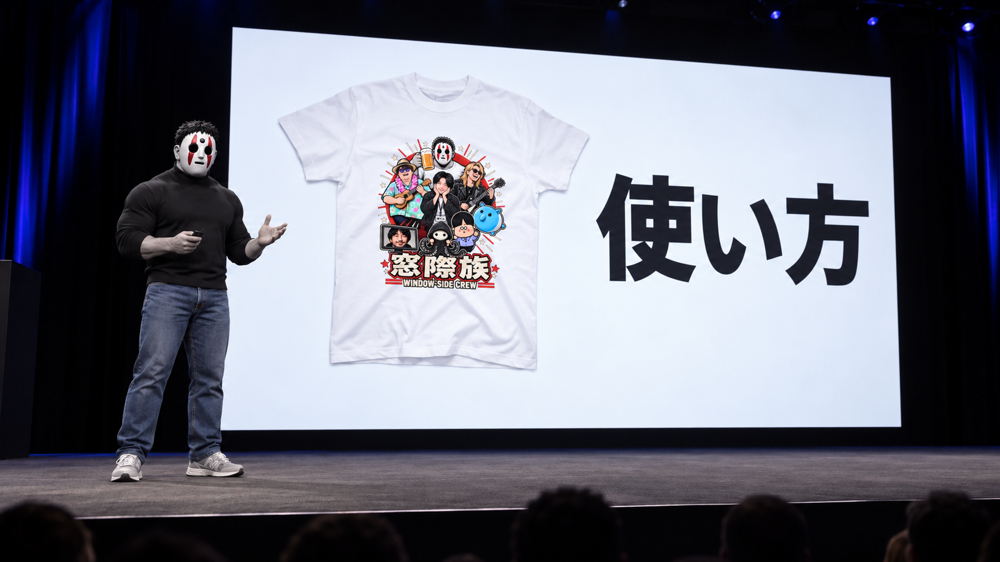
では、どうやって使うのか。
特別な操作を、覚える必要はありません。
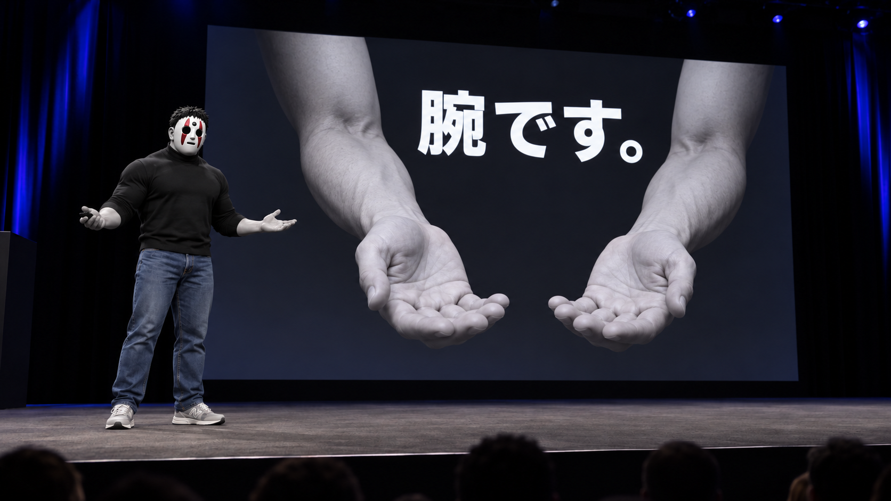
私たちは、生まれたときから持っているものを使います。
腕です。
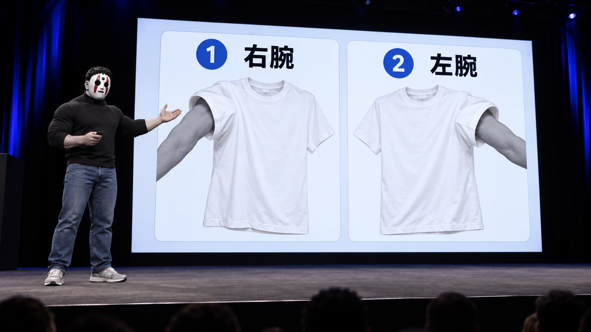
右腕を通す。
左腕を通す。
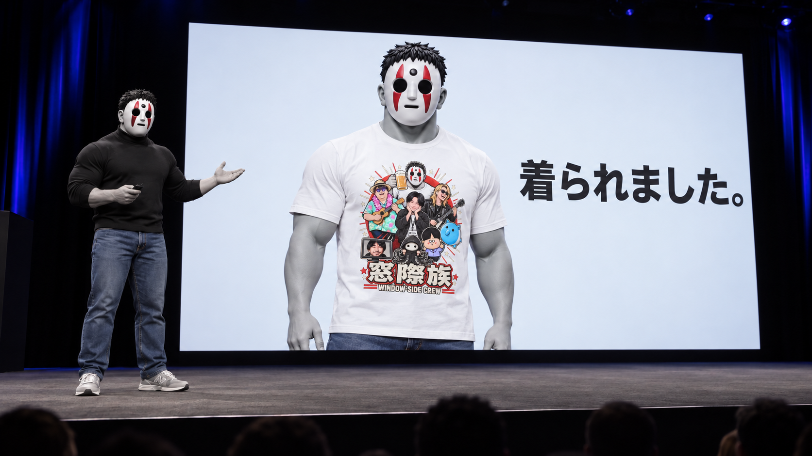
そして、頭を通す。
着られました。
実にシンプルです。
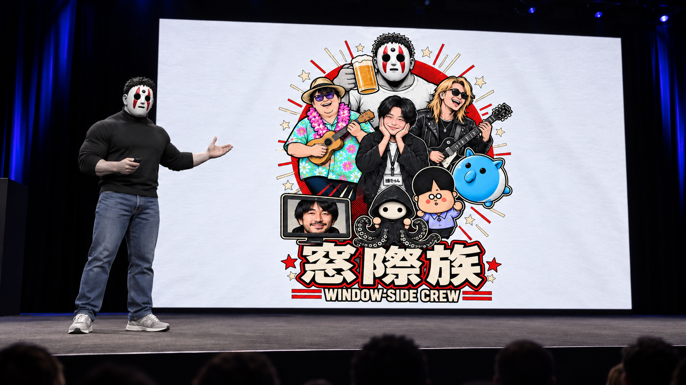
見てください。このディテール。
窓際族が、全員ここにいる。
しかも、誰も働いていません。
完璧です。
さて。これが、いつ手に入るのか。
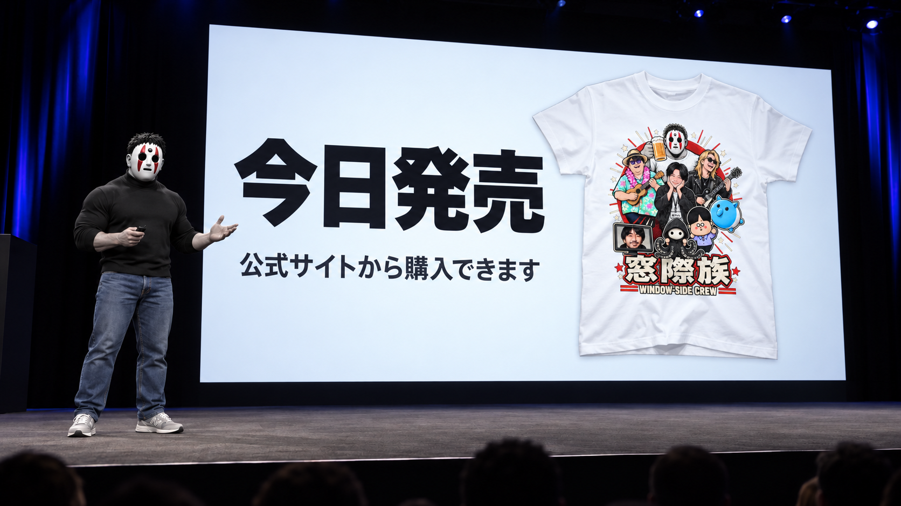
今日です。
公式サイトから、購入できます。
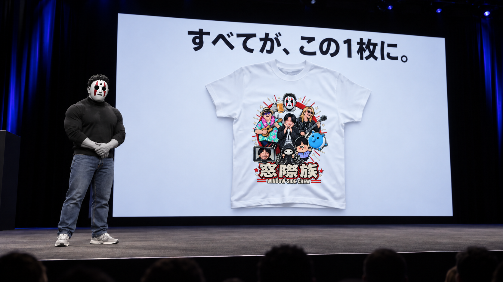
窓際族。T。シャツ。
すべてが、この1枚に。